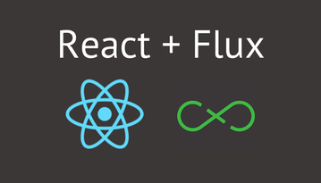

<!DOCTYPE html>
<html>
<head>
    <meta charset="utf-8">
<style>
@import url(https://fonts.googleapis.com/earlyaccess/nanumgothic.css); /* 나눔고딕 : 'Nanum Gothic' */
</style>
<title>WebFrameworks.kr - React with Redux 와 Django를 이용한 SPA 개발</title>
<link rel="stylesheet" href="/static/css/bootstrap.min.css">
<link rel="stylesheet" href="/static/css/main.css">
<link rel="stylesheet" href="/static/css/syntax.css">
<link rel="stylesheet" href="//maxcdn.bootstrapcdn.com/font-awesome/4.3.0/css/font-awesome.min.css">
<script src="/static/js/jquery.min.js"></script>
<script src="/static/js/bootstrap.min.js"></script>

    <link rel="stylesheet" href="/static/css/toc.css">
    <script type="text/javascript" src="/static/js/jquery.toc.js"></script>
</head>
<body>
<nav class="navbar navbar-default top_menu" role="navigation">
    <div class="container-fluid">
        <div class="navbar-header">
            <button type="button" class="navbar-toggle" data-toggle="collapse" data-target="#navbar-collapse-1">
                <span class="sr-only">Toggle navigation</span>
                <span class="icon-bar"></span>
                <span class="icon-bar"></span>
                <span class="icon-bar"></span>
            </button>
            <a class="navbar-brand" href="/">웹Frameworks</a>
        </div>

        <div class="collapse navbar-collapse" id="navbar-collapse-1">
            <ul class="nav navbar-nav navbar-left">
                <li><a href="/getstarted">Get Started</a></li>
            </ul>
            <ul class="nav navbar-nav navbar-left">
                <li><a href="/updates">Update</a></li>
            </ul>
            <ul class="nav navbar-nav navbar-left">
                <li><a href="/tutorials">Tutorials</a></li>
            </ul>
            <ul class="nav navbar-nav navbar-left">
                <li><a href="/quickstart">Quick Start</a></li>
            </ul>
            <ul class="nav navbar-nav navbar-left">
                <li><a href="/archives">Archives</a></li>
            </ul>
            <ul class="nav navbar-nav navbar-left">
                <li><a href="https://github.com/KoreaHTML5/webframeworks.kr/blob/master/CONTRIBUTE.md" target="_blank">참여하기</a></li>
            </ul>
            <ul class="nav navbar-nav navbar-left">
                <li><a href="http://goo.gl/forms/MB9ZxVvdrD" target="_blank">설문하기</a></li>
            </ul>
        </div>
    </div>
</nav>


<div class="content_bg"  style="background-color: #;color: #;" >
<div class="col-md-10 col-md-offset-1 title_header jumbotron"  style="background:url() no-repeat center"  >
<h1 class="title_header_title">React with Redux 와 Django를 이용한 SPA 개발</h1>
<p class="title_header_summary">React와 Redux를 이용한 Front 웹어플리케이션과 Django 서버를 통해 풀스택 SPA(Single Page Application) 개발을 위해 필요한 요소 기술셋 및 구조를 알아봅니다.</p>
</div>
</div>

<div>

    <div class="col-sm-3 col-md-2 col-md-offset-2">
        <div class="panel panel-default">
            <div class="panel-heading">
                <h3 class="panel-title">작성자</h3>
            </div>
            <div class="panel-body">
                <div class="media">
                    <a class="pull-left" href="#">
                        
                    </a>
                    <div class="media-body">
                        <h4 class="media-heading">
                            이성규

                        </h4>
                        shalomeir<br>
                    </div>
                </div>
            </div>
        </div>

        <div id="toc_location"></div>

        <div class="panel panel-default">
    <div class="panel-heading">
        <h3 class="panel-title">Tags</h3>
    </div>
    <div class="panel-body">
        <a href='/tags/jquery/' style='color: rgba(0,0,0,0.053431)'>jquery</a>
<a href='/tags/javascript/' style='color: rgba(0,0,0,9.457226)'>javascript</a>
<a href='/tags/html/' style='color: rgba(0,0,0,0.053431)'>html</a>
<a href='/tags/grunt/' style='color: rgba(0,0,0,0.053431)'>grunt</a>
<a href='/tags/gulp/' style='color: rgba(0,0,0,0.053431)'>gulp</a>
<a href='/tags/build/' style='color: rgba(0,0,0,0.320584)'>build</a>
<a href='/tags/yeoman/' style='color: rgba(0,0,0,0.053431)'>yeoman</a>
<a href='/tags/foundation/' style='color: rgba(0,0,0,0.053431)'>foundation</a>
<a href='/tags/bower/' style='color: rgba(0,0,0,0.106861)'>bower</a>
<a href='/tags/twitter/' style='color: rgba(0,0,0,0.106861)'>twitter</a>
<a href='/tags/framework/' style='color: rgba(0,0,0,2.083796)'>framework</a>
<a href='/tags/angularjs/' style='color: rgba(0,0,0,0.908321)'>angularjs</a>
<a href='/tags/tutorials/' style='color: rgba(0,0,0,1.175474)'>tutorials</a>
<a href='/tags/backbone/' style='color: rgba(0,0,0,0.213723)'>backbone</a>
<a href='/tags/getstarted/' style='color: rgba(0,0,0,0.160292)'>getstarted</a>
<a href='/tags/underscore/' style='color: rgba(0,0,0,0.053431)'>underscore</a>
<a href='/tags/library/' style='color: rgba(0,0,0,0.374015)'>library</a>
<a href='/tags/Ext/' style='color: rgba(0,0,0,0.480876)'>Ext</a>
<a href='/tags/JS/' style='color: rgba(0,0,0,0.748029)'>JS</a>
<a href='/tags/tutorial/' style='color: rgba(0,0,0,0.694599)'>tutorial</a>
<a href='/tags/modernizr/' style='color: rgba(0,0,0,0.053431)'>modernizr</a>
<a href='/tags/bootstrap/' style='color: rgba(0,0,0,0.160292)'>bootstrap</a>
<a href='/tags/quickstart/' style='color: rgba(0,0,0,0.053431)'>quickstart</a>
<a href='/tags/angular-di/' style='color: rgba(0,0,0,0.053431)'>angular-di</a>
<a href='/tags/animation/' style='color: rgba(0,0,0,0.213723)'>animation</a>
<a href='/tags/router/' style='color: rgba(0,0,0,0.053431)'>router</a>
<a href='/tags/promise/' style='color: rgba(0,0,0,0.267153)'>promise</a>
<a href='/tags/responsive/' style='color: rgba(0,0,0,0.053431)'>responsive</a>
<a href='/tags/form/' style='color: rgba(0,0,0,0.106861)'>form</a>
<a href='/tags/validation/' style='color: rgba(0,0,0,0.106861)'>validation</a>
<a href='/tags/map/' style='color: rgba(0,0,0,0.053431)'>map</a>
<a href='/tags/direcitve/' style='color: rgba(0,0,0,0.053431)'>direcitve</a>
<a href='/tags/file/' style='color: rgba(0,0,0,0.106861)'>file</a>
<a href='/tags/test/' style='color: rgba(0,0,0,0.213723)'>test</a>
<a href='/tags/ui-bootstrap/' style='color: rgba(0,0,0,0.053431)'>ui-bootstrap</a>
<a href='/tags/twitter-bootstrap/' style='color: rgba(0,0,0,0.053431)'>twitter-bootstrap</a>
<a href='/tags/express/' style='color: rgba(0,0,0,0.106861)'>express</a>
<a href='/tags/express.js/' style='color: rgba(0,0,0,0.053431)'>express.js</a>
<a href='/tags/node.js/' style='color: rgba(0,0,0,0.213723)'>node.js</a>
<a href='/tags/backend/' style='color: rgba(0,0,0,0.160292)'>backend</a>
<a href='/tags/d3.js/' style='color: rgba(0,0,0,0.053431)'>d3.js</a>
<a href='/tags/visualization/' style='color: rgba(0,0,0,0.320584)'>visualization</a>
<a href='/tags/reactjs/' style='color: rgba(0,0,0,0.106861)'>reactjs</a>
<a href='/tags/expressjs/' style='color: rgba(0,0,0,0.374015)'>expressjs</a>
<a href='/tags/react/' style='color: rgba(0,0,0,1.602920)'>react</a>
<a href='/tags/session/' style='color: rgba(0,0,0,0.106861)'>session</a>
<a href='/tags/meteor/' style='color: rgba(0,0,0,0.748029)'>meteor</a>
<a href='/tags/SEO/' style='color: rgba(0,0,0,0.053431)'>SEO</a>
<a href='/tags/REST/' style='color: rgba(0,0,0,0.053431)'>REST</a>
<a href='/tags/API/' style='color: rgba(0,0,0,0.053431)'>API</a>
<a href='/tags/es2015/' style='color: rgba(0,0,0,0.106861)'>es2015</a>
<a href='/tags/es6/' style='color: rgba(0,0,0,0.587737)'>es6</a>
<a href='/tags/es7/' style='color: rgba(0,0,0,0.106861)'>es7</a>
<a href='/tags/DDP/' style='color: rgba(0,0,0,0.053431)'>DDP</a>
<a href='/tags/ngMessages/' style='color: rgba(0,0,0,0.106861)'>ngMessages</a>
<a href='/tags/jsx/' style='color: rgba(0,0,0,0.053431)'>jsx</a>
<a href='/tags/publish/' style='color: rgba(0,0,0,0.053431)'>publish</a>
<a href='/tags/subscribe/' style='color: rgba(0,0,0,0.053431)'>subscribe</a>
<a href='/tags/meteor.js/' style='color: rgba(0,0,0,0.053431)'>meteor.js</a>
<a href='/tags/reactive/' style='color: rgba(0,0,0,0.053431)'>reactive</a>
<a href='/tags/package/' style='color: rgba(0,0,0,0.053431)'>package</a>
<a href='/tags/static/' style='color: rgba(0,0,0,0.053431)'>static</a>
<a href='/tags/assets/' style='color: rgba(0,0,0,0.053431)'>assets</a>
<a href='/tags/public/' style='color: rgba(0,0,0,0.053431)'>public</a>
<a href='/tags/flux/' style='color: rgba(0,0,0,0.213723)'>flux</a>
<a href='/tags/redux/' style='color: rgba(0,0,0,0.374015)'>redux</a>
<a href='/tags/server/' style='color: rgba(0,0,0,0.053431)'>server</a>
<a href='/tags/distribution/' style='color: rgba(0,0,0,0.053431)'>distribution</a>
<a href='/tags/webpack/' style='color: rgba(0,0,0,0.160292)'>webpack</a>
<a href='/tags/development/' style='color: rgba(0,0,0,0.053431)'>development</a>
<a href='/tags/optimization/' style='color: rgba(0,0,0,0.053431)'>optimization</a>
<a href='/tags/immutable/' style='color: rgba(0,0,0,0.053431)'>immutable</a>
<a href='/tags/orm/' style='color: rgba(0,0,0,0.213723)'>orm</a>
<a href='/tags/database/' style='color: rgba(0,0,0,0.213723)'>database</a>
<a href='/tags/hapi.js/' style='color: rgba(0,0,0,0.053431)'>hapi.js</a>
<a href='/tags/hapi/' style='color: rgba(0,0,0,0.213723)'>hapi</a>
<a href='/tags/ionic/' style='color: rgba(0,0,0,0.106861)'>ionic</a>
<a href='/tags/hybrid-app/' style='color: rgba(0,0,0,0.053431)'>hybrid-app</a>
<a href='/tags/django/' style='color: rgba(0,0,0,0.053431)'>django</a>
<a href='/tags/fullstack/' style='color: rgba(0,0,0,0.053431)'>fullstack</a>
<a href='/tags/spa/' style='color: rgba(0,0,0,0.053431)'>spa</a>
<a href='/tags/ExpressJS/' style='color: rgba(0,0,0,0.267153)'>ExpressJS</a>
<a href='/tags/NodeJS/' style='color: rgba(0,0,0,0.267153)'>NodeJS</a>
<a href='/tags/Sequelize/' style='color: rgba(0,0,0,0.267153)'>Sequelize</a>
<a href='/tags/Mocha/' style='color: rgba(0,0,0,0.267153)'>Mocha</a>
<a href='/tags/Supertest/' style='color: rgba(0,0,0,0.267153)'>Supertest</a>
<a href='/tags/UnitTest/' style='color: rgba(0,0,0,0.267153)'>UnitTest</a>
<a href='/tags/this/' style='color: rgba(0,0,0,0.106861)'>this</a>
<a href='/tags/dom/' style='color: rgba(0,0,0,0.053431)'>dom</a>
<a href='/tags/es5/' style='color: rgba(0,0,0,0.106861)'>es5</a>
<a href='/tags/virtualdom/' style='color: rgba(0,0,0,0.106861)'>virtualdom</a>
<a href='/tags/modules/' style='color: rgba(0,0,0,0.053431)'>modules</a>
<a href='/tags/asynchronous/' style='color: rgba(0,0,0,0.053431)'>asynchronous</a>
<a href='/tags/semicolon/' style='color: rgba(0,0,0,0.053431)'>semicolon</a>
<a href='/tags/nodejs/' style='color: rgba(0,0,0,0.106861)'>nodejs</a>
<a href='/tags/ECMAScript2015/' style='color: rgba(0,0,0,0.106861)'>ECMAScript2015</a>
<a href='/tags/babel/' style='color: rgba(0,0,0,0.053431)'>babel</a>
<a href='/tags/angular,/' style='color: rgba(0,0,0,0.053431)'>angular,</a>
<a href='/tags/electron/' style='color: rgba(0,0,0,0.106861)'>electron</a>
<a href='/tags/docker/' style='color: rgba(0,0,0,0.267153)'>docker</a>
<a href='/tags/D3/' style='color: rgba(0,0,0,0.053431)'>D3</a>
<a href='/tags/node/' style='color: rgba(0,0,0,0.106861)'>node</a>
<a href='/tags/aws/' style='color: rgba(0,0,0,1.335766)'>aws</a>
<a href='/tags/dynamoDB/' style='color: rgba(0,0,0,0.053431)'>dynamoDB</a>
<a href='/tags/chrome/' style='color: rgba(0,0,0,0.053431)'>chrome</a>
<a href='/tags/native/' style='color: rgba(0,0,0,0.106861)'>native</a>
<a href='/tags/markdown/' style='color: rgba(0,0,0,0.053431)'>markdown</a>
<a href='/tags/vue/' style='color: rgba(0,0,0,1.976934)'>vue</a>
<a href='/tags/middleware/' style='color: rgba(0,0,0,0.053431)'>middleware</a>
<a href='/tags/IoT/' style='color: rgba(0,0,0,0.053431)'>IoT</a>
<a href='/tags/serverless/' style='color: rgba(0,0,0,0.480876)'>serverless</a>
<a href='/tags/python/' style='color: rgba(0,0,0,0.160292)'>python</a>
<a href='/tags/socket.io/' style='color: rgba(0,0,0,0.160292)'>socket.io</a>
<a href='/tags/typescript/' style='color: rgba(0,0,0,0.053431)'>typescript</a>
<a href='/tags/laravel/' style='color: rgba(0,0,0,1.335766)'>laravel</a>
<a href='/tags/github/' style='color: rgba(0,0,0,0.106861)'>github</a>
<a href='/tags/slack/' style='color: rgba(0,0,0,0.106861)'>slack</a>
<a href='/tags/data/' style='color: rgba(0,0,0,0.267153)'>data</a>
<a href='/tags/opensource/' style='color: rgba(0,0,0,0.053431)'>opensource</a>
<a href='/tags/pwa/' style='color: rgba(0,0,0,0.053431)'>pwa</a>
<a href='/tags/vuejs/' style='color: rgba(0,0,0,0.374015)'>vuejs</a>
<a href='/tags/nextjs/' style='color: rgba(0,0,0,0.427445)'>nextjs</a>

    </div>
</div>
    </div>

    <div class="col-sm-9 col-md-6">
        <div class="media_content media_item shadow_panel" id="main_content">
            <h1>React with Redux 와 Django를 이용한 SPA 개발</h1>

<p>일명 Single Page Application (SPA), 웹 어플리케이션은 네이티브앱과는 별도로 빠르게 성장하고 있는 플랫폼입니다. 여전히 웹은 누구에게나 친숙하고 접근성이 좋은 플랫폼이며, SPA는 네이티브와 유사한 경험을 줄 수 있기 때문에 사용성이 중요한 웹서비스는 웹앱으로 만들어 지고 있습니다.</p>

<p>​</p>

<p>​</p>

<p>이 글에서는 SPA 웹어플리케이션 개발을 위해 <a href="https://facebook.github.io/react/"><strong>React</strong></a> JavaScript 라이브러리와 <a href="https://github.com/gaearon/redux"><strong>Redux</strong></a>를 이용하여 Front Side 웹앱을 개발하고 동시에 <a href="http://www.django-rest-framework.org/"><strong>Django REST</strong></a>를 서버사이드로 사용하여 <strong>Full Stack</strong>을 구현한 오픈소스인 <a href="https://github.com/shalomeir/snippod-starter-demo-app"><strong>Snippod-Starter-Demo-App</strong></a> 을 통해 SPA 구조 및 사용된 요소 기술셋/라이브러리를 살펴보고자 합니다. 
대부분의 웹앱 샘플 프로그램의 서버사이드는 JavaScript End to End 구현에 따른 여러 잇점때문에 <strong>Node.js</strong>를 많이 사용하고 있지만 본 글에서 살펴보는 데모어플리케이션은 Django ORM 모델을 활용한 REST API 서버를 이용한 서비스를 위해 <a href="https://www.djangoproject.com/"><strong>Django</strong></a>를 통해 REST API 서버를 별도로 구축되어 있습니다. 물론 Static한 Frontside 코드는 <strong>Node.js</strong>를 통해 여전히 서빙되고 있기 때문에 간단한 데모앱이지만 프론트를 위한 서버와 REST API 서버 두개를 동시에 활용하고 있습니다. 그래서 본 글에서 설명하고 있는 데모앱의 저장소에는 프론트 사이드와 서버 사이드 GitHub 저장소를 각각 <a href="https://git-scm.com/book/ko/v1/Git-%EB%8F%84%EA%B5%AC-%EC%84%9C%EB%B8%8C%EB%AA%A8%EB%93%88">Git 서브모듈</a>로 바라보고 있으며 실제 코드는 개별 서브모듈 내에 존재하고 있습니다.</p>

<p>
<center>Snippod Starter Demo Application Full Stack Diagram</center>
&nbsp;</p>

<p><a href="http://snippod-demo-front.ap-northeast-2.elasticbeanstalk.com/"></a>
<center><a href="http://snippod-demo-front.ap-northeast-2.elasticbeanstalk.com/">Snippod Starter Demo Application</a> 메인화면</center></p>

<ul>
<li><strong>Git Repository</strong> : <a href="https://github.com/shalomeir/snippod-starter-demo-app">https://github.com/shalomeir/snippod-starter-demo-app</a>

<ul>
<li><strong>Git Repository (Front Side)</strong> : <a href="https://github.com/shalomeir/snippod-starter-demo-app-front">https://github.com/shalomeir/snippod-starter-demo-app-front</a></li>
<li><strong>Git Repository (Server Side)</strong> : <a href="https://github.com/shalomeir/snippod-starter-demo-app-server">https://github.com/shalomeir/snippod-starter-demo-app-server</a></li>
<li><strong>Git Repository For CodeLab (Front Side)</strong> : <a href="https://github.com/shalomeir/snippod-starter-demo-app-front/tree/codelab">https://github.com/shalomeir/snippod-starter-demo-app-front/tree/codelab</a></li>
</ul></li>
<li><strong>Git Repository For CodeLab 설치를 위한 설정 가이드 문서</strong> : <a href="https://docs.google.com/document/d/1PPooko0uzUanYZMwKrEUXUWMD3FXCarKhVxGq5_Kip0/edit?usp=sharing">https://docs.google.com/document/d/1PPooko0uzUanYZMwKrEUXUWMD3FXCarKhVxGq5_Kip0/edit?usp=sharing</a></li>
<li><strong>Git Repository For CodeLab 강의 PPT 자료[^2]</strong> : <a href="https://drive.google.com/file/d/0B9ltVFRI_UMiTjdNYzc5UklQTVU/view?usp=sharing">https://drive.google.com/file/d/0B9ltVFRI_UMiTjdNYzc5UklQTVU/view?usp=sharing</a>
&nbsp;</li>
<li><strong>DEMO (Updated by <a href="https://www.snippod.com/">Snippod Inc.</a>)</strong> : <a href="http://snippod-demo-front.ap-northeast-2.elasticbeanstalk.com/">http://snippod-demo-front.ap-northeast-2.elasticbeanstalk.com/</a></li>
</ul>

<h2>사용된 기술 스택</h2>

<p>Snippod-Starter-Demo-App에서 사용된 주요 라이브러리 들과 그에 대한 간략한 소개는 다음과 같습니다.</p>

<h3>Frontend side</h3>

<ul>
<li><a href="http://facebook.github.io/react/"><strong>React</strong></a>: UI View 를 만들어 주기 위한 라이브러리. 만들고자 하는 부분들을 Component단위로 구현</li>
<li><a href="https://github.com/gaearon/redux"><strong>Redux</strong></a>: Flux 의 구조에 영향을 받아 단방향 데이터 흐름을 사용하게 해주는 상태 컨테이너 </li>
<li><a href="https://github.com/paularmstrong/normalizr"><strong>normalizr</strong></a>: Flux 와 Redux 앱을 위해 JSON 응답 결과를 정의한 Schema에 따라 정규화 해주는 라이브러리</li>
<li><a href="http://redux-form.com/"><strong>Redux Form</strong></a>: Redux store를 통해 React 콤포넌트 내 form 데이터를 관리해주는 라이브러리</li>
<li><a href="http://semantic-ui.com/"><strong>Semantic UI</strong></a>: UI 스타일링을 위한 프레임워크로 Bootstrap과 유사한 역할을 하지만 더 자유도가 높은 편이며 커스터마이징을 위한 체계적인 스타일 구조를 별도의 빌드 프로세스를 통해 지원함</li>
<li><a href="https://github.com/FormidableLabs/radium"><strong>Radium</strong></a>: <a href="https://facebook.github.io/react/tips/inline-styles.html">React Inlins Styles</a>을 보다 파워풀하게 사용하기 위한 라이브러리</li>
<li><a href="http://rackt.github.io/react-router/"><strong>React-router</strong></a>: SPA 에서 중요한 Routing (url path) 처리</li>
<li><a href="https://github.com/reactjs/react-router-redux"><strong>react-router-redux</strong></a>: 구 이름은 redux-simple-router. React-router와 Redux store의 sync를 유지해줌</li>
<li><a href="https://github.com/yahoo/react-intl"><strong>React Intl</strong></a>: Yahoo에서 제공하는 국제화(i18n)를 위한 JavaScript 라이브러리 <a href="http://formatjs.io/">Format.js</a>의 일부로 React 를 위한 바인딩 기능을 제공</li>
<li><a href="https://visionmedia.github.io/superagent/"><strong>superagent</strong></a>: ajax call 을 쉽게 하기 위한 라이브러리</li>
<li><a href="https://webpack.github.io/"><strong>Webpack</strong></a>: 모듈 번들러</li>
</ul>

<h3>Server side</h3>

<ul>
<li><a href="https://www.djangoproject.com/"><strong>Django</strong></a>: 장고 웹 프레임워크</li>
<li><a href="http://www.django-rest-framework.org/"><strong>Django REST Framework</strong></a>: REST API 서버를 만들기 위한 프레임워크</li>
<li><a href="http://initd.org/psycopg/"><strong>psycopg2</strong></a>: PostgreSQL 을 장고에서 쓰기 위한 어답터</li>
</ul>

<p>&nbsp;</p>

<h2>세부 기술별 소개</h2>

<h4><strong>React + Flux(Redux)</strong></h4>

<p><strong>React</strong>를 이용한 웹 어플리케이션을 개발할 때 <a href="https://facebook.github.io/flux/docs/overview.html"><strong>Flux</strong></a> 아키텍쳐를 쉽게 구현하기 위한 <a href="https://github.com/gaearon/redux"><strong>redux</strong></a>가 현재 React 커뮤니티에서 독보적인 지지를 받고 있습니다. <a href="https://github.com/gaearon/redux"><strong>redux</strong></a>를 접할때는 <a href="http://dobbit.github.io/redux/docs_kr/advanced/AsyncFlow.html">비동기 API 핸들링</a>이나 <a href="http://dobbit.github.io/redux/docs_kr/advanced/Middleware.html">미들웨어 개념</a>등 한번에 잘 이해가 어려운 부분이 있지만 적용하고 사용하시면 <a href="https://github.com/gaearon/redux"><strong>redux</strong></a>를 사용하지 않았다면 복잡한 데이터 스토어를 관리하기 위해 얼마나 많은 부분을 직접 관리해야 했을지 걱정이 되실 것입니다.
<a href="https://github.com/gaearon/redux"><strong>redux</strong></a>에서 개발자는 기능에 따른 함수인 <a href="http://dobbit.github.io/redux/docs_kr/basics/Actions.html">ActionCreator</a> 및 <a href="http://dobbit.github.io/redux/docs_kr/basics/Reducers.html">Reducer</a> 들을 만들고 redux를 통해 조합해주면 모든 웹앱의 상태를 단일 Store로 관리할 수 있게 합니다. Snippod-Starter-Demo-App 오픈소스에서는 ActionCreator 및 Reducer 를 구현하는 과정에서 <a href="https://github.com/erikras">&#39;Erik Rasmussen&#39;</a>님이 제안한 <a href="https://github.com/erikras/ducks-modular-redux"><strong>Ducks</strong></a> 방법을 통해 기능적으로 공통분모가 있는 ActionCreator 와 Reducer, Actions 를 하나의 파일로 관리하고 있습니다. 또한 JSON 데이터 처리를 하는 데 있어 개별 ID에 따라 모든 데이터를 &#39;entities&#39;에 단일 객체로 저장하고 list 는 별도의 pagination 객체로 처리하고 있으며 이를 위해 정규화 과정을 처리해주는 <a href="https://github.com/paularmstrong/normalizr"><strong>normalizr</strong></a> 라이브러리를 사용하여 자동화 하였습니다.</p>

<h4><strong>React-router</strong></h4>

<p>WebApp을 만들때 routing 처리는 까다롭지만 너무 중요한 요소 입니다. <a href="http://rackt.github.io/react-router/"><strong>React-router</strong></a>가 그 역할을 잘 수행해줍니다. 또한 <a href="https://github.com/reactjs/react-router-redux"><strong>react-router-redux</strong></a>를 통해 Redux Store와 잘 동기가 되어 있습니다. 실제 router를 셋팅하는 데 있어 처음에는 조금 막막한데, 샘플 소스가 가이드가 될 수 있을 것 같습니다.</p>

<h4><strong>Semantic UI</strong></h4>

<p>UI 구현을 위해 사용하는 프레임워크로 본 오픈소스에서는 <a href="http://semantic-ui.com/"><strong>Semantic UI</strong></a>가 도입되었습니다. 일반적으로 많이 사용되는 <a href="http://getbootstrap.com/">Bootstrap</a>과 비교해 보았을 때, Class 네이밍 룰의 의미적인 조합으로만 특정 Dom에 원하는 콤포넌트 스타일링이 적용되기에 사용하기 편리하고 제공하는 기본 콤포넌트들의 수준 또한 굉장히 높고 다양합니다. 최근 많이 적용되고 있는 Google이 제안한 <a href="http://www.google.com/design/spec/material-design/introduction.html"><strong>Material</strong></a> 디자인을 활용한 React Meterial Component 도입도 검토하였으나 적용은 쉬운 반면 커스터마이징이 쉽지 않다고 판단되었고 <a href="http://semantic-ui.com/"><strong>Semantic UI</strong></a>는 유연하게 스타일 변경이 가능한 점이 큰 장점입니다.
<a href="http://semantic-ui.com/"><strong>Semantic UI</strong></a>에서는 테마 적용 및 커스텀 테마를 작성하고 적용 하기 위한 별도의 스타일 선언 및 관리 체계가 구조화되어 있고 이를 위한 별도의 빌드 도구도 <a href="http://gulpjs.com/">Gulp</a>를 통해 제공합니다. 만약 체계적으로 CSS (SASS or LESS) 스타일을 관리하고 싶다면 <a href="http://semantic-ui.com/"><strong>Semantic UI</strong></a>에서 제공하는 스타일을 거의 사용하지 않아도 커스텀 테마 기능이 좋은 가이드가 되어 줍니다. 아쉬운 점이 없는 것은 아니지만 한번 사용해보는 것 추천 드립니다. Quora에 올라온 <a href="https://www.quora.com/Do-you-prefer-Semantic-UI-or-Bootstrap">&quot;Do you prefer Semantic UI or Bootstrap?&quot;</a> 질문에 대한 답변들도 참고해보세요.</p>

<h4><strong>Radium</strong></h4>

<p><a href="https://facebook.github.io/react/tips/inline-styles.html">React Inlins Styles</a>은 React 커뮤니티가 성장하면서 이목을 많이 받고 있는 스타일 적용의 한 방안으로 React 에서 기본적으로 제공하는 기능중 하나입니다. React 만으로는 &#39;:hover&#39; 또는 MediaQuery 등의 적용이 까다로운 편인데 이를 편하게 할 수 있고 그외 편의성을 향상시켜주는 라이브러리가 많이 존재합니다. 그중 저는 <a href="https://github.com/FormidableLabs/radium"><strong>Radium</strong></a>을 적용하였습니다. Global하게 선언하는 CSS 스타일 외에 직접적으로 Style을 주입시키는 <a href="https://facebook.github.io/react/tips/inline-styles.html">Inlins Styles</a> 방식을 하이브리드로 함께 사용하는 것이 편하지만 정확히 어떤 경우에만 <a href="https://facebook.github.io/react/tips/inline-styles.html">Inlins Styles</a>을 통해 스타일을 선언할 지 명확한 기준을 세워서 사용하는 것이 좋을 것 같습니다.</p>

<h4><strong>React Intl</strong></h4>

<p><a href="https://ko.wikipedia.org/wiki/%EA%B5%AD%EC%A0%9C%ED%99%94%EC%99%80_%EC%A7%80%EC%97%AD%ED%99%94">국제화와 지역화</a> 기능을 앱 프레임워크 차원에서 지원하기 위해 현재 탄탄하게 개발 발전하고 있는 Yahoo에서 제공한 JavaScript 라이브러리 <a href="http://formatjs.io/">Format.js</a>의 React 바인딩 버전인 <a href="https://github.com/yahoo/react-intl"><strong>React Intl</strong></a>을 전면적으로 도입되었습니다. 쉽게 여러 언어로 설정을 변경할 수 있게 되어 있으며 번역 파일을 별도로 관리할 수 있도록 체계화 되어 있습니다. 참고로 GitHub 공유된 <a href="https://github.com/emmenko/redux-react-router-async-example"><strong>&#39;redux-react-router-async-example&#39;</strong></a> 오픈소스에서 본 기능을 일부 가져와 적용되어 있습니다.</p>

<h4><strong>superagent</strong></h4>

<p>ajax call 을 하기 위해 사용되었습니다.</p>

<h4><strong>Django</strong></h4>

<p>서버 프로그래밍에선 비동기 프로그래밍이 더욱 까다롭기에 JavaScript보다 python이 더 편하것 같습니다. 또한 Django Model 에서 제공하는 ORM은 아주 훌륭하고 공식 문서도 너무 잘 되어 있어요.</p>

<h4><strong>Django REST Framework</strong></h4>

<p>RESTful 한 API 서버가 서버와 클라이언트간의 기준이라고 할 때, 이 기준을 잘 지킬 수 있게 해주는 고마운 프레임워크 입니다. REST API를 제대로 다 이해하고 직접 구현했어야 한다면 굉장히 많은 시간을 이 부분에 쓰거나, 또는 무시하고 나중에 고생하거나 하지 않을까 싶습니다.</p>

<h4><strong>psycopg2</strong></h4>

<p>RDBMS 를 선택하는데 있어 Django 와 함께 사용한다면 <a href="http://www.postgresql.org/"><strong>PostgreSQL</strong></a>과 <a href="https://www.mysql.com/"><strong>MySQL</strong></a>이라는 두가지 선택지 중에 고민하게 되는 경우가 많을 것 같습니다. <a href="http://www.postgresql.org/"><strong>PostgreSQL</strong></a>에서는 Migration 중에 문제가 별로 발생하지 않고 Django와의 궁합이 좋은 편입니다.</p>

<p>&nbsp;</p>

<h2>AWS 배포하기</h2>

<p></p>

<p><a href="http://aws.amazon.com/ko/elasticbeanstalk/"><strong>Elastic Beanstalk</strong></a>은 로드 밸런싱, 스케일링 작업도 손쉽게 가능하고 모니터링도 쉽게 가능하며 데모 프로그램 역시 이를 통해 배포되었습니다. 공유된 <a href="http://snippod-demo-front.ap-northeast-2.elasticbeanstalk.com/">&#39;Snippod Starter Demo App&#39;</a>을 살펴보시면 Elastic Beanstalk에서 제공하는 것을 그대로 사용하였음을 알 수 있는데요. 개발환경에서 올려보는 것과는 여러가지로 다른점이 많아 초기 셋팅에 에로사항이 발생할 수 있습니다.
혹시 Elastic Beanstalk에 Django 배포 셋업을 참고하시고 싶으시다면 공유된 소스 중 &#39;./ebextensions&#39; 디렉토리를 살펴보시면 도움이 될 것 같습니다.</p>

<p>&nbsp;</p>

<h2>Reference</h2>

<h4>Snippod-Starter-Demo-App Github repositories 및 소개글</h4>

<p>본 글은 스타트업 <a href="https://www.snippod.com/"><strong>Snippod</strong></a>에서 제공하고 있는 &#39;<a href="https://github.com/shalomeir/snippod-starter-demo-app">Snippod-Starter-Demo-App 오픈소스</a>&#39;와 이를 설명한 <a href="http://www.shalomeir.com/2016/07/snippod-starter-demo-app-full-stack-react-redux-django/">블로그 포스팅</a>을 웹Frameworks 사용자들이 접하기 쉽도록 하기 위해 작성되었습니다.</p>

<h4><a href="http://stackshare.io/instagram/instagram">Instagram Stack</a></h4>

<p>본 Full Stack은 <a href="https://instagram.com/">Instagram</a>의 <a href="https://github.com/petehunt">Pete Hunt</a>가 발표했던 <a href="https://youtu.be/VkTCL6Nqm6Y">Instagram에서 React를 통해 SPA를 도입한 사례 소개 영상</a> 의 영향을 받았고 Instagram 관련 기술 정보 들을 많이 참고하여 만들어 졌습니다. Instagram에서 적극적으로 정보를 공유해주어 참고할 수 있는 자료가 많았는데요, 개발팀이 스타트업 초기 고려했던 기술 스택에 대해 쓴 글인 <a href="http://instagram-engineering.tumblr.com/post/13649370142/what-powers-instagram-hundreds-of-instances"><strong>&#39;What Powers Instagram: Hundreds of Instances, Dozens of Technologies&#39;</strong></a>은 <a href="https://charsyam.wordpress.com/2011/12/17/%EB%B0%9C-%EB%B2%88%EC%97%AD-%EC%88%98%EB%B0%B1%EB%8C%80%EC%9D%98-%EC%9E%A5%EB%B9%84%EC%99%80-%EC%88%98%EC%8B%AD%EA%B0%80%EC%A7%80%EC%9D%98-%EA%B8%B0%EC%88%A0-instagram%EC%9D%98-%ED%9E%98/">한글로 번역된 포스팅</a>도 존재합니다. 결국 본 데모 프로그램에 사용한 주요 기술들인 React+Django+PostgreSQL 은 Instagram 과 정확히 일치합니다.</p>

<h5>Front side</h5>

<ul>
<li><a href="https://github.com/erikras/react-redux-universal-hot-example">React Redux Universal Hot Example</a> : React 와 Redux를 적용한 boilerplate 중 가장 파워풀한 소스 중 하나로 데모 앱의 기반이 됩니다.</li>
<li><a href="https://github.com/rackt/redux/tree/master/examples/real-world">Redux Real-World Example</a>: 특히 <a href="https://github.com/paularmstrong/normalizr"><strong>normalizr</strong></a>를 <a href="https://github.com/reactjs/redux/blob/master/examples/real-world/reducers/paginate.js"><strong>paginate</strong></a>하는 방식을 잘 보여줍니다.</li>
<li><a href="https://github.com/gaearon/flux-react-router-example">gaeron&#39;s Flux React Router Example</a> : 한번 GET 해온 데이터들을 Page 나 Sorting 옵션이 바뀌어도 잘 보관하고 있도록 하는 것은 중복적인 서버와의 통신을 막고 훨씬 빠르게 페이지간 이동을 가능하게 해주는 데요, 이러한 방식의 Store를 구현하기 위해 gaeron이 공유한 소스가 굉장히 도움이 됩니다.</li>
<li><a href="https://github.com/emmenko/redux-react-router-async-example">redux-react-router-async-example</a> : <a href="https://github.com/yahoo/react-intl"><strong>React Intl</strong></a>적용 및 빌드 도구는 본 예제소스를 참고하였습니다.</li>
</ul>

<h5>Server side</h5>

<ul>
<li><a href="https://thinkster.io/django-angularjs-tutorial/">Thinkster.io Django and AngularJS Tutorial</a> : Django가 Template이 아닌 AngularJS를 주로 사용하는 케이스로 Django REST Framework를 사용하고 있기에 서버 측면에서 참고가 되었습니다.</li>
</ul>

        </div>

        <div class="media_content media_item shadow_panel">
            <p>Tags : <a href="/tags/javascript">javascript</a>&nbsp;<a href="/tags/react">react</a>&nbsp;<a href="/tags/redux">redux</a>&nbsp;<a href="/tags/django">django</a>&nbsp;<a href="/tags/fullstack">fullstack</a>&nbsp;<a href="/tags/spa">spa</a>&nbsp;</p>
        </div>


        <div class="media_content media_item shadow_panel">
            <div id="disqus_thread"></div>
<script type="text/javascript">
    /* * * CONFIGURATION VARIABLES: EDIT BEFORE PASTING INTO YOUR WEBPAGE * * */
    var disqus_shortname = 'html5krforkisa'; // required: replace example with your forum shortname

    /* * * DON'T EDIT BELOW THIS LINE * * */
    (function() {
        var dsq = document.createElement('script'); dsq.type = 'text/javascript'; dsq.async = true;
        dsq.src = '//' + disqus_shortname + '.disqus.com/embed.js';
        (document.getElementsByTagName('head')[0] || document.getElementsByTagName('body')[0]).appendChild(dsq);
    })();
</script>
<noscript>Please enable JavaScript to view the <a href="http://disqus.com/?ref_noscript">comments powered by Disqus.</a></noscript>
<a href="http://disqus.com" class="dsq-brlink">comments powered by <span class="logo-disqus">Disqus</span></a>
    
        </div>

    </div>

    <script>
        $('#main_content').toc();
    </script>
</div>
<footer>
<table width="100%" height="80" class="footer">
    <tr>
        <td align="center" class="footer_content">
            WebFrameworks.kr @since 2015
        </td>
    </tr>
</table>
</footer>
<script>
    (function(i,s,o,g,r,a,m){i['GoogleAnalyticsObject']=r;i[r]=i[r]||function(){
        (i[r].q=i[r].q||[]).push(arguments)},i[r].l=1*new Date();a=s.createElement(o),
            m=s.getElementsByTagName(o)[0];a.async=1;a.src=g;m.parentNode.insertBefore(a,m)
    })(window,document,'script','//www.google-analytics.com/analytics.js','ga');

    ga('create', 'UA-56520981-1', 'auto');
    ga('send', 'pageview');

</script>
</body>
</html>